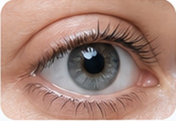
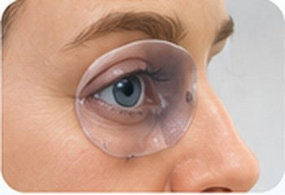
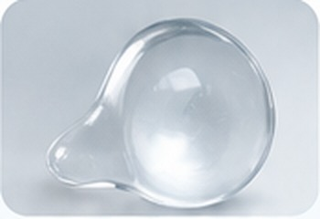
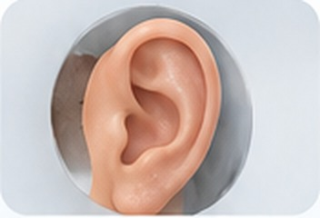
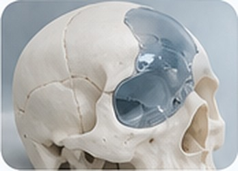
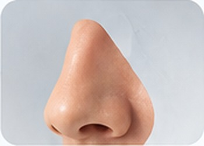
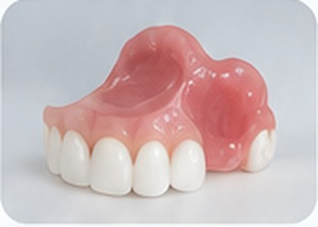
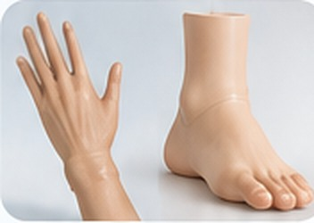
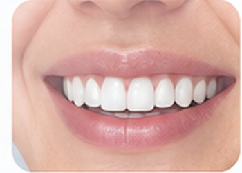

Dra. Lourdes Elizabeth
Rodríguez Barreto
Protesista Maxilofacial
Prótesis Maxilofacial y
Odontología Oncológica
Restaurando funciones y mejorando vidas
Nuestros servicios
Soluciones personalizadas en prótesis maxilofacial para la rehabilitación funcional y estética.

Prótesis órbito-facial

Conformadores oculares

Prótesis auricular (oreja)

Anillo de compresión para cicatriz queloide

Prótesis para craneoplastia

Prótesis nasal

Obturadores para maxilectomía y mandibulectomía

Prótesis estética de mano y pie

Odontología estética
Servicio destacado · Odontología Oncológica
Atención odontológica del paciente con cáncer
Atención dental especializada para pacientes con cáncer, adaptada a sus necesidades y coordinada con su equipo médico tratante.
Ubicaciones
📍 Zacualpan de Amilpas, Morelos
Carretera a Cuautla N. 12, Zacualpan de Amilpas, Morelos.
Ver en Google Maps ↗📍 Coyoacán, CDMX
Camino al Estadio Azteca 179, Col. El Caracol, Coyoacán, C.P. 04739. Torre anexa de consultorios, 1er piso, consultorio 6, Hospital Merlos.
Ver en Google Maps ↗Confirma la ubicación y disponibilidad antes de acudir.